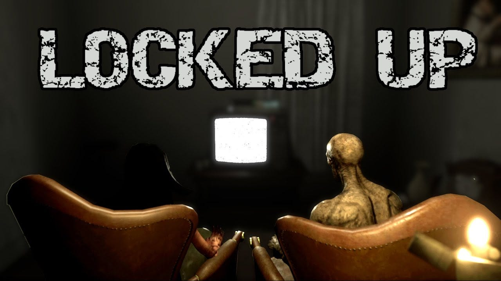

We are customers Don’t Lock us
How Platforms entrepreneurs exploit the switching cost


Platforms entrepreneurs want to lock us to the platforms they have built because it helps them have more power to extract the most value from our user lifecycle. Once you are into a given environment switching will be harder and harder the more you are dependant on this environment. The switching cost is something to consider when you are choosing a tooling or working platform. If we take the example of computers with operating systems we have the choice between Windows, Linux, and Osx to chose from but choosing one of them will shape the things you will gonna have to pick in the future and the more time you spend as a user of these platforms the more your work and life depend on them. Dependency, when it is about technology, can be as painful as drug dependency. The tech stack mainly the internet should be an open interoperable environment where the switching should be smooth and cost less.
We have for sure made huge progress in building interoperable technological stacks but I do think that we should make more effort in this direction and big tech companies like Microsoft, Apple, Amazon Google, Facebook, … Should consider more interoperability in their tech product design process but when your future depends on the economical value that your company extracts from the market and when this market is driven by competition that behaves like a zero sum game, it is difficult to make decisions that favorite interoperability.
Transferring a file from Windows to OSX by using a USB key is so difficult and needs the installation of third-party software and … Why we cannot just plug the USB, in the mac Copy the file and plug the USB key back into the pc and use our file. Filesystems are different.
Let’s build systems that are designed to be easy for the user to switch. Giving customers the choice increase trust and help them take decision easily because They will not be afraid about the cost of the switching which is coming back to this decision that they just have taken. When it is about e-commerce it can be as simple as a fund back program but when it is about OS and software and games we should find solutions that minimize the switching cost.
Book Dojo is a mail-only startup and this startup adopt this mindset described above for the data-driven books published and the book-driven platforms operated because book loves and book community really deserve to have freedom of choice and not to be locked to a solution that may not fit them at one-time spot in the futures. Switching out of Book Dojo will always be easy for you. if you want to be part of Book Dojo You can use this form.